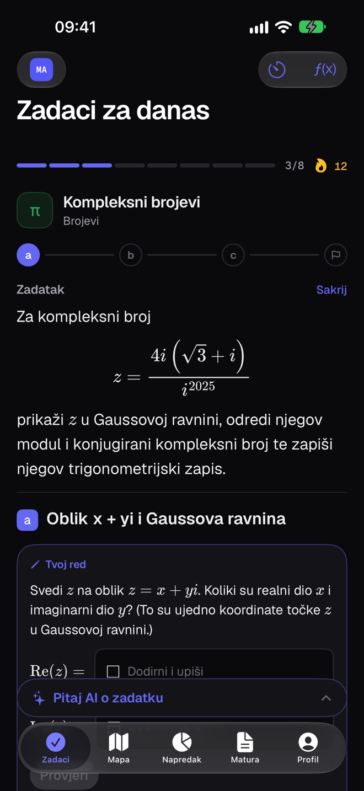

MMatMat
Priprema za maturu koja pamti umjesto tebe
Matematika A i B te fizika za državnu maturu
matmat.online
Matematika A i B te fizika za državnu maturu
matmat.online

Zadatak se vraća baš kad ga počneš zaboravljati
matmat.online/kako-radi